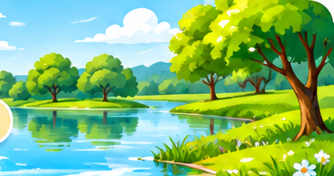

Маленька краплинка — велика мандрівка!
Досліджуйте, перетягуйте, перевіряйте та відкривайте таємниці води.

Оберіть усі місця, де можна знайти воду. Вона буває не лише рідкою!
Лід і сніг. Вода зберігає форму.
Вода тече й набуває форми посудини.
Водяна пара невидима. Білий «димок» над чайником — це дрібні краплинки води.
Уявіть чисту склянку питної води. Які властивості можна перевірити безпечно?
Перетягніть картки в правильні кошики. На телефоні можна просто натиснути картку, а потім кошик.
Розставте етапи в правильному порядку. Натисніть картку, а потім порожнє місце.
☀️ Сонце нагріває воду → вода випаровується → пара охолоджується й утворює хмари → опади повертають воду на Землю.
Виберіть дії, які допомагають берегти воду.
Завершіть думку:
Перевірте свої відповіді в усіх вправах, а потім сформуйте звіт.
Відкриється вікно друку. Оберіть «Зберегти як PDF». На смартфоні скористайтеся пунктом «Друк» → «Зберегти PDF».